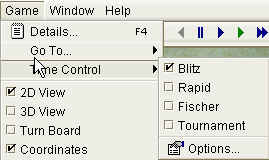

|
|
jose 1.4.1 |
|

Opens The Game Details Dialog . You can edit game specific details, like player names, event and site information, etc.
Go to the beginning of the game.
Go back one move (without actually deleting it).
Delete the last move.
Stop the engine (see Pause ).
Start the engine (see Move Now ).
Go to the next move in the game.
Play an animation of the current game.
Hit Pause to stop the animation.
Use The Animation Dialog to control the animation speed.
Go to the end of the game.

Set the current time controls.
Use The Settings Dialog to edit time control settings.
Switch to the two-dimensional board view.
Switch to the 3D board view.
Flip the board (so that you can play with the black pieces).
Show file and rank coordinates.
Start a background analysis. The results of the analysis will be constantly displayed but the engine will not move.
Ask the chess engine for a hint. It will show you the best move in the current position.
Offer a draw to the chess engine. Note that not all engines are able to handle draw offers. It might simply ignore the offer.
Resign the current game.
Close the current game. If the game is modified, you will be asked to save it into the database.
See The Game Panel .
Close all open games. If there are modified games, you will be asked to save it into the database.
See The Game Panel .
Close all open games except the current (i.e. all backgrounded tabs). If there are modified games, you will be asked to save it into the database.
See The Game Panel .
Set up a new position. See The Setup Dialog
Controls game animation. See The Animation Dialog
|
|
© 2002-2006 jose-chess.sourceforge.net |
|